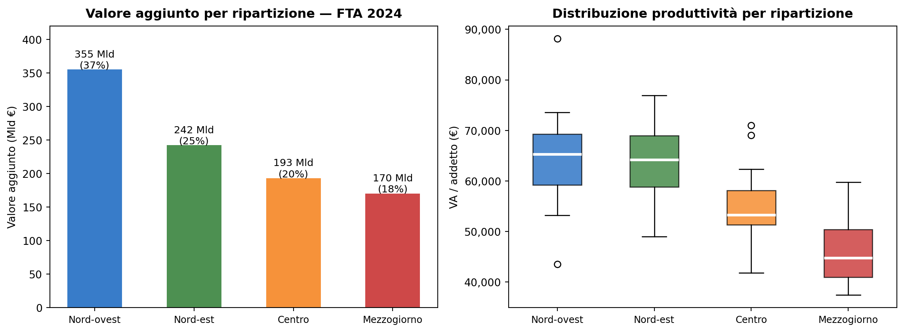
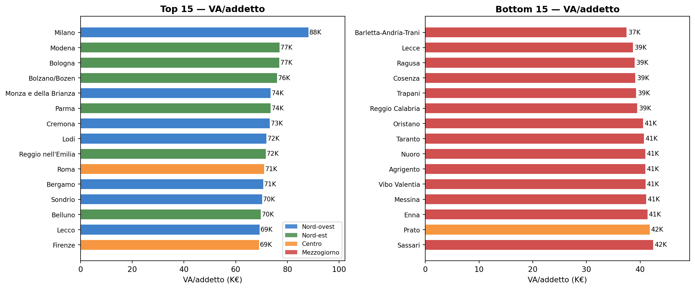
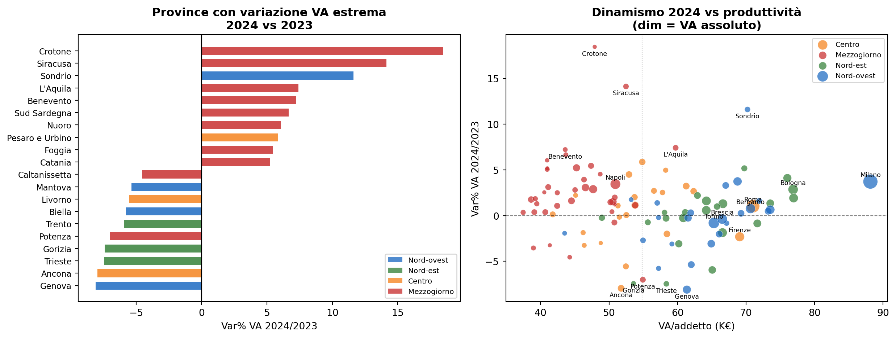
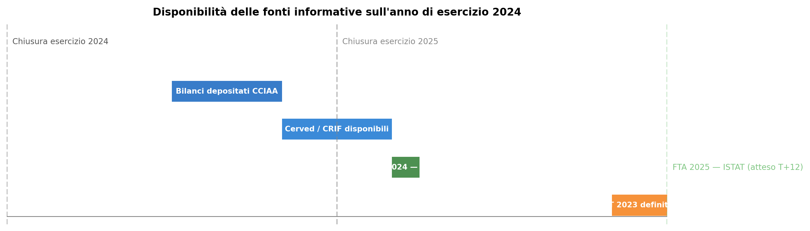
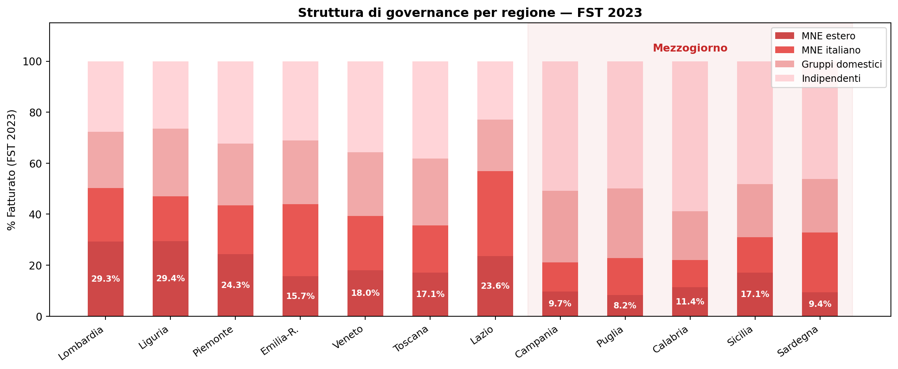

Le banche e il FTA Istat
Come il Frame Territoriale Anticipato supporta l’analisi del credito e del territorio
Paolo Volterra ![]()
Le banche locali e regionali costruiscono le loro strategie creditizie e commerciali su una conoscenza del territorio che spesso si ferma ai dati di Centrale Rischi, bilanci depositati e segnalazioni di vigilanza. Il Frame Territoriale Anticipato (FTA) di ISTAT — diffuso per la prima volta a livello provinciale nel marzo 2026 per l’anno 2024 — introduce un nuovo livello informativo: indicatori economici di impresa (valore aggiunto, fatturato, occupazione, produttività) per 107 province e 15 settori ATECO, disponibili a soli 12 mesi dal periodo di riferimento. Questo documento illustra come il FTA si inserisce nei processi bancari di analisi del rischio, pianificazione commerciale e sorveglianza del portafoglio.
ISTAT, Frame Territoriale Anticipato, FTA, analisi territoriale, valore aggiunto, province, credito, rischio
1 Il dato che mancava nell’analisi bancaria del territorio
Una banca locale conosce bene i propri clienti. Conosce i bilanci depositati, le segnalazioni in Centrale Rischi, gli andamentali dei conti. Ma conosce altrettanto bene il contesto economico in cui quei clienti operano? Riesce a distinguere un’impresa manifatturiera bresciana che perde margini perché il distretto è in difficoltà da una che li perde per ragioni proprie? Sa se la crescita del portafoglio PMI in una determinata provincia è in linea con la crescita del tessuto produttivo locale o la sta sovra-finanziando?
Questi quesiti richiedono un’informazione che fino ad oggi non era disponibile con la granularità necessaria e con tempi compatibili con il ciclo decisionale: indicatori economici di impresa a livello provinciale e settoriale, aggiornati entro l’anno.
Il Frame Territoriale Anticipato (FTA) di ISTAT risponde a questo bisogno. Pubblicato da ISTAT il 23 marzo 2026 per l’anno 2024 (le tavole locali scaricate sono datate 20 marzo), il FTA porta valore aggiunto, fatturato, occupazione e produttività per 107 province × 15 settori ATECO a circa 12 mesi dal periodo di riferimento — circa un anno prima dei dati statistici definitivi e con copertura censuaria sulle imprese con dipendenti.
2 Cos’è il FTA e cosa misura
2.1 La posizione nel sistema statistico ISTAT
Il FTA non è un’indagine campionaria ma un registro statistico: nasce dall’integrazione di ASIA Anticipato, bilanci civilistici preliminari e informazioni dell’indagine IULGI sulle unità locali delle grandi imprese. È quindi una stima censuaria sull’universo delle imprese con almeno un dipendente, articolata per unità locale, e non una rilevazione campionaria.
Sistema SBS / registri statistici d'impresa
│ universo: industria + servizi, esclude: finanza, istruzione pubblica, domestici
Frame SBS indicatori per impresa — t+18 mesi (nazionale)
│
├── Frame Anticipato imprese con dipendenti — circa t+11 mesi
│
├── Frame SBS Territoriale (FST) ~5 milioni unità locali — t+22/24 mesi
│ include: governance MNE, dettaglio comunale
│
└── Frame Territoriale Anticipato (FTA) ~1,97 milioni UL — t+12 mesi
solo imprese con dipendenti, dettaglio provinciale + ATECOIl FTA è la versione anticipata del FST: guadagna 10–12 mesi di anticipo rinunciando alle imprese senza dipendenti (circa 3 milioni di unità locali, ma di dimensione molto ridotta) e al dettaglio sulla governance societaria.
2.2 Le variabili disponibili per la banca
Per ciascuna delle 107 province e ciascuna delle 15 sezioni ATECO, il FTA diffonde:
| Variabile | Unità | Rilevanza per la banca |
|---|---|---|
| Numero di unità locali | n. | Dimensione del mercato potenziale |
| Addetti (dip. + indip.) | n. medio annuo | Proxy della massa salariale e della capacità di rimborso |
| Dipendenti | n. medio annuo | Base per calcoli di CdL e benchmark |
| Costo del lavoro | migliaia di € | Rigidità strutturale dei costi |
| Valore aggiunto | migliaia di € | Capacità di generazione di margine operativo lordo |
| Fatturato | migliaia di € | Grandezza proxy per i volumi di cashflow |
| Acquisti di beni e servizi | migliaia di € | Dipendenza dalla filiera (rischio fornitore) |
| VA / addetto | €/addetto | Produttività del lavoro — benchmark peer comparison |
| VA / Fatturato | % | Intensità del valore aggiunto: proxy dei margini |
| Acquisti / Fatturato | % | Dipendenza da fornitori / vulnerabilità upstream |
| Costo del lavoro / VA | % | Elasticità del margine: più alto = più vulnerabile |
| Costo del lavoro / dipendente | €/dip. | Livello retributivo medio del distretto |
La copertura settoriale include 15 sezioni ATECO: B+C (Manifattura), D (Energia), E (Acqua/Rifiuti), F (Costruzioni), G (Commercio), H (Trasporti), I (Alloggio/Ristorazione), J (ICT), L (Immobiliare), M (Professionali/Scientifici), N (Noleggio/Supporto), P (Istruzione), Q (Sanità), R (Artistiche), S (Altre attività).
A livello regionale è disponibile anche la disaggregazione per classe dimensionale (microimprese 0–9, piccole 10–49, medie 50–249, grandi 250+ addetti).
3 Il quadro economico 2024 — le coordinate del territorio
3.1 L’universo di riferimento
FTA 2024 — Universo imprese con dipendenti:
Unità locali: 1.97 milioni
Addetti: 15.33 milioni
Valore aggiunto: 961 Mld €
Fatturato: 3768 Mld €
VA/Fatturato: 25.5%
VA/addetto (medio): 62,645 €Il FTA 2024 copre 1,97 milioni di unità locali, 15,3 milioni di addetti e 960 miliardi di euro di valore aggiunto. Non è l’economia nella sua interezza (mancano i lavoratori autonomi puri, le imprese senza dipendenti, la finanza e la pubblica amministrazione), ma è la parte dell’economia rilevante per il portafoglio imprese delle banche commerciali.
3.2 Nord-Sud, ancora: il dualismo nei dati

Sinistra: distribuzione del valore aggiunto per ripartizione con quota % sul totale. Destra: distribuzione della produttività (VA/addetto) — ogni punto rappresenta una provincia.
Il dato macro conferma il dualismo: il Nord-ovest concentra il 37% del valore aggiunto (355 Mld) con una produttività mediana di 65.300 €/addetto; il Mezzogiorno pesa il 17,7% (170 Mld) con 44.800 €/addetto — un divario del 45%.
Per una banca con presidio su entrambe le macroaree questo non è solo un dato statistico ma un vincolo strutturale: la capacità di rimborso delle imprese meridionali è sistematicamente inferiore a parità di settore ATECO, non perché siano imprese peggiori, ma perché operano in un contesto meno produttivo. Il FTA quantifica questo contesto per ogni singola provincia e ogni anno, consentendo di aggiornare i benchmark di peer comparison usati nello scoring creditizio.
3.3 La mappa della produttività provinciale

Le 15 province più produttive (sinistra) e le 15 meno produttive (destra) per VA/addetto. Il colore indica la ripartizione geografica.
La forbice di produttività è di 2,4 volte tra la provincia di testa (Milano, 88.100 €/add) e quella di coda (Barletta-Andria-Trani, 37.500 €/add). Le 15 province meno produttive sono quasi integralmente nel Mezzogiorno — l’unica eccezione è Prato, dove il tessile distrettuale registra margini storicamente compressi.
Per il Credit Risk, questo ranking non è solo un’informazione accademica: un benchmark di VA/addetto aggiornato per provincia e settore consente di classificare un’impresa in modo più accurato rispetto al proprio contesto di mercato. Un’impresa manifatturiera con VA/addetto di 70K€ è eccellente a Napoli, nella norma a Brescia.
3.4 Il 2024: chi è cresciuto e chi no

Le 10 province con la maggior crescita e le 10 con il maggior calo del VA nel 2024 rispetto al 2023. Destra: relazione tra produttività e tasso di variazione — dimensione proporzionale al VA assoluto.
Le variazioni 2024 raccontano tre storie distinte, leggibili come scenari di rischio e opportunità per le banche che hanno portafoglio in queste aree:
Province portuali e di manifattura pesante in contrazione — Genova (−8,1%), Ancona (−8,0%), Trieste (−7,5%), Livorno (−5,5%): il dato segnala stress in province dove logistica, industria e filiere export hanno un peso rilevante. Una banca con concentrazione su queste piazze dovrebbe valutare se il peggioramento degli andamentali dei propri clienti locali è idiosincratico o sistemico — il FTA aiuta a formulare questa domanda prima che lo facciano i bilanci.
Province energetiche in forte accelerazione — Crotone (+18,5%), Sondrio (+11,6%), Siracusa (+14,1%): la presenza di specializzazioni energetiche rende questi territori un caso da approfondire. La particolarità di Siracusa — VA +14% su fatturato −5% — segnala una variazione dei margini compatibile con cambiamenti nella struttura dei costi e degli acquisti della filiera petrolchimica: un’informazione rilevante per chi finanzia le imprese di quel polo.
La Basilicata e l’estrattivo — Potenza registra un calo del VA del 7% su un crollo del fatturato del 27,7%: segnale da leggere insieme al peso dell’attività estrattiva nel bacino petrolifero lucano, che nelle annate passate aveva sostenuto l’intera economia provinciale.
4 Come le banche usano il FTA
4.1 Il vantaggio del contesto settoriale-geografico
Il FTA non è uno strumento per valutare le singole imprese — per quello esistono i bilanci e le banche dati private. È uno strumento per costruire il contesto in cui quella valutazione avviene: quanto vale mediamente un addetto in manifattura a Bergamo? Il CdL/VA del commercio a Palermo è fisiologicamente alto o anomalo? Il fatturato della mia cliente costruttrice a Bologna è cresciuto, ma il settore costruzioni bolognese è cresciuto il doppio — sto perdendo quota?
Queste domande hanno ora risposta numerica, aggiornata annualmente, per ogni provincia.
4.2 Applicazioni per funzione
Ogni funzione bancaria legge il FTA in modo diverso, perché le domande che pone al territorio sono diverse. Ciò che conta non è avere il dato in sé, ma avere una chiave di lettura calibrata sulle proprie esigenze operative.
Per il Credit Risk, il FTA risolve un problema metodologico ricorrente nello scoring: come costruire benchmark di peer comparison che tengano conto non solo del settore ATECO ma anche del contesto geografico. Una produttività di 65.000 €/addetto nel manifatturiero è nella norma a Bergamo, è eccellente a Bari. Il FTA fornisce questi numeri per 107 province × 15 settori, ogni anno. Più importante ancora: consente di identificare i deterioramenti sistemici prima che compaiano nei bilanci. Se il VA manifatturiero di una provincia di presidio cala del 6%, la PD media del portafoglio locale va rivista prima che lo dicano i singoli creditori — non dopo.
La Direzione Commerciale ha invece interesse opposto: vuole trovare i bacini in crescita prima che lo facciano i concorrenti. Il FTA mostra dove l’economia si sta espandendo nei dodici mesi precedenti, una finestra temporale in cui le imprese locali stanno crescendo ma non hanno ancora fatto richiesta di nuovi affidamenti. È il momento in cui una campagna di acquisizione PMI ha il miglior rapporto qualità-costo.
Per la Pianificazione Strategica, il confronto tra la composizione settoriale del portafoglio crediti e quella del tessuto produttivo locale diventa uno strumento di autodisciplina: la banca è sottorappresentata in settori in crescita? Ha concentrazione anomala in settori che stanno perdendo peso nel territorio? Queste domande hanno ora una risposta quantitativa e aggiornabile.
Sul fronte del rischio di concentrazione e NPL, il FTA è un campanello di allarme precoce. Un calo del VA del 7–8% in una piazza — come quello registrato a Genova o Ancona nel 2024 — precede di diversi mesi il deterioramento dei singoli crediti: le imprese assorbono prima lo shock nei margini, poi nelle riserve, poi iniziano a non rimborsare. Il FTA intercetta il segnale nella prima fase, quando c’è ancora tempo per agire in sede di ICAAP e per rinegoziare le posizioni più esposte.
| Funzione | Domanda al FTA | Variabile chiave |
|---|---|---|
| Credit Risk | Qual è il benchmark di settore-area per lo scoring? | VA/addetto, CdL/VA per provincia × ATECO |
| Dir. Commerciale | Dove sta crescendo il tessuto produttivo locale? | Var% VA e addetti per provincia |
| Analisi Settoriale | Qual è la rotazione settoriale in atto? | Quota industria vs servizi, variazioni ATECO |
| Pianificazione | Il nostro portafoglio riflette la struttura produttiva locale? | Composizione per settore vs portafoglio |
| NPL / Risk | Ci sono stress sistemici in corso nel territorio? | Var% VA e CdL/VA per province di presidio |
4.3 Integrazione con i sistemi informativi interni
Il FTA è progettato per essere integrato con i dati bancari attraverso chiavi già in uso:
- Codice ATECO (sezione, divisione, gruppo) → join con il portafoglio imprese classificato per attività economica in anagrafica clienti.
- Codice provincia ISTAT → join con
LOC_SPORTnelle basi dati Bankit (TDB sportelli, TFR erogazioni MLT, TRI sofferenze) per confrontare la dinamica del portafoglio banca con quella del sistema a livello provinciale. - Codice regione → aggregazione per aree di presidio delle direzioni territoriali.
- PRO_COM_T (via join con anagrafica comuni) → collegamento con i Sistemi Locali del Lavoro (SLL) per analisi di bacino occupazionale, utile per le banche che pianificano la rete sportelli su bacini funzionali piuttosto che su perimetri amministrativi.
5 Il caso del timing: anticipare il ciclo informativo
5.1 Il problema del timing
Un analista di Credit Risk che lavora su un portafoglio PMI manifatturiere bresciane si trova, a fine 2025, in una situazione tipica: ha a disposizione i bilanci depositati in CCIAA fino a giugno–settembre 2025, e dunque i dati dell’esercizio 2024 solo per le imprese più tempestive. La grande massa dei bilanci 2024 arriva sulle banche dati commerciali — Cerved, CRIF, TELEMACO — tra ottobre 2025 e gennaio 2026. Chi ha depositato in ritardo o in forma semplificata, come moltissime micro e piccole imprese, non è ancora visibile.
Il FTA 2024 è stato diffuso a marzo 2026. Arriva, quindi, dopo che la maggior parte dei bilanci è già disponibile. Ma porta qualcosa che i bilanci non portano: non l’informazione sulla singola impresa, bensì una fotografia dell’intero tessuto produttivo provinciale — tutte le 1,97 milioni di unità locali con dipendenti, costruita con la stessa metodologia su ogni provincia d’Italia, confrontabile in modo rigoroso tra Brescia e Bari, tra il 2023 e il 2024. Nessun aggregatore privato può offrire questo tipo di confronto sulla massa delle PMI minori, perché quelle imprese non depositano bilanci in forma estesa.
I due livelli sono complementari. Il bilancio della singola impresa serve per l’istruttoria. Il FTA serve per capire se quella singola impresa sta navigando controcorrente rispetto al suo contesto, o se il contesto stesso è peggiorato — e in quel caso la valutazione del rischio cambia profondamente.
Il grafico seguente mette in prospettiva la sequenza delle disponibilità informative per chi lavora su dati dell’esercizio 2024 — e indica il FTA 2025 come informazione attesa intorno a T+12 mesi, quindi a cavallo tra fine 2026 e inizio 2027, salvo calendario effettivo di diffusione ISTAT.

Timeline comparativa delle fonti informative per l’analisi del credito su dati dell’esercizio 2024.
Il FTA si colloca nella stessa finestra temporale dei dati commerciali, ma apre un livello informativo diverso: non il bilancio della singola impresa, ma la salute del tessuto produttivo locale in cui quella impresa opera. I due livelli sono complementari, non concorrenti.
5.2 Le multinazionali nel Mezzogiorno: un’opportunità che FTA anticipa
La struttura di governance delle imprese — chi le controlla: capitale estero, gruppi italiani o operatori indipendenti — è una variabile che il FTA ancora non espone, ma che il Frame SBS Territoriale definitivo (FST) quantifica per regione e ripartizione. I dati FST 2023 mostrano un quadro con implicazioni dirette per la strategia bancaria:

Composizione del fatturato per tipo di controllo societario (FST 2023, selezione di regioni). Le quote sono calcolate sul fatturato totale regionale.
Nella selezione di regioni considerate, le imprese a controllo estero (MNE estero) pesano circa il 16–29% del fatturato in molte regioni del Centro-Nord, con punte prossime al 29% in Lombardia e Liguria. Nel Mezzogiorno la quota è più bassa in Campania, Puglia e Sardegna (circa 8–10%), mentre Calabria e Sicilia mostrano quote più elevate nella selezione qui riportata; la differenza con il Centro-Nord resta quindi rilevante, ma non uniforme.
Questo non è semplicemente un dato storico. Con la ZES unica Mezzogiorno (attiva dal 2024), il credito d’imposta per investimenti al Sud e i miliardi PNRR allocati nelle regioni meridionali, le condizioni strutturali per un’espansione degli insediamenti multinazionali nelle regioni meridionali sono cambiate rispetto al decennio precedente.
Per una banca con presidio nel Mezzogiorno, questo crea una sfida e un’opportunità:
- La sfida: le MNE tendono a finanziarsi con tesorerie centralizzate di gruppo, non con le banche locali. L’arrivo di un grande gruppo estero in una provincia meridionale porta occupazione e VA ma non porta necessariamente portafoglio bancario.
- L’opportunità: l’indotto — fornitori locali, subappaltatori, servizi alle imprese — che si sviluppa attorno a un insediamento MNE è invece un cliente naturale della banca locale. E questo indotto può emergere nel FTA come segnale territoriale aggregato prima di essere leggibile in modo completo nei bilanci individuali: una crescita anomala del VA manifatturiero o dei servizi professionali in una provincia del Sud può essere il primo segnale statistico di un polo industriale emergente.
5.3 Dall’analisi al segnale operativo
| Segnale FTA | Interpretazione | Azione bancaria |
|---|---|---|
| VA per provincia × ATECO in calo >5% su base annua | Deterioramento sistemico: non è la singola impresa, è il contesto. Il portafoglio locale è sotto stress prima che i bilanci lo mostrino. | Stress test concentrazione geografica. Rivalutazione RWA. Escalation al Risk Management prima delle prossime revisioni di fido. |
| Produttività (VA/add) in calo sulla provincia di presidio | I margini del distretto si comprimono. Possibile aumento della PD media nel segmento di riferimento. | Aggiornamento benchmark PD settoriale. Attivazione del monitoraggio intensificato per le posizioni più esposte. |
| Fatturato in calo con VA stabile o in crescita | Compressione o ricomposizione dei costi intermedi: il fatturato cala ma il VA tiene perché acquisti e servizi si riducono più rapidamente dei ricavi. | Revisione dello scoring per le imprese del settore in quella provincia. Attenzione alle garanzie reali (i ricavi calano). |
| CdL/VA superiore al 65% per un settore provinciale | Alta rigidità strutturale dei costi: in caso di calo del fatturato, le imprese di questa piazza hanno poco spazio prima di andare in perdita. | Cautela sui rinnovi nei settori ad alta rigidità. Verificare covenant di redditività nelle delibere in scadenza. |
| Crescita anomala del VA in un distretto poco presidiato | Possibile polo emergente (rinnovabili, pharma, insediamento MNE). La banca può arrivare prima della concorrenza sui fornitori e sull'indotto. | Analisi del gap di presidio. Campagna commerciale sull'indotto. Apertura/rafforzamento del presidio locale. |
| VA/fatturato in calo strutturale (multi-anno) su una piazza | Progressiva commoditizzazione del settore: pressione strutturale sui margini operativi di lungo periodo. | Vigilanza sull'andamento dei margini nelle revisioni di fido. Riduzione progressiva dell'esposizione unsecured. |
| Forte crescita addetti senza corrispondente crescita VA | Crescita occupazionale non produttiva: segnale di inefficienza o di transizione verso attività a basso VA — rischio nel medio termine. | Monitoraggio degli andamentali. Verifica della coerenza tra il fatturato dichiarato e i movimenti di conto. |
6 Fonti e controlli effettuati
Le grandezze FTA 2024 usate nel documento derivano dalle tavole ISTAT in IN/Tavole20marzo2026.zip. La pagina ISTAT di diffusione indica come data ufficiale di pubblicazione il 23 marzo 2026, periodo di riferimento 2024, e descrive il FTA come registro territoriale a T+12 mesi, costruito integrando ASIA Anticipato, bilanci preliminari e IULGI. Le tavole riportano un valore aggiunto complessivo superiore a 960 miliardi di euro, al netto della sezione K.
Le informazioni FST 2023 e sulla governance delle imprese derivano da IN/Tavole.zip, in particolare da 2. Appendice Statistica Frame territoriale Multinazionali 2023.xlsx. Nel grafico sulle multinazionali, le quote sono calcolate come fatturato della tipologia di unità locale diviso fatturato totale regionale.
Fonti web verificate:
Trasparenza sull’uso dell’intelligenza artificiale
L’uso di strumenti di intelligenza artificiale generativa è dichiarato esplicitamente in quanto parte del processo di lavoro seguito nella redazione del presente documento. Tali strumenti sono stati impiegati a supporto della lettura, della sintesi, della riorganizzazione argomentativa e della revisione testuale, sempre nell’ambito di un processo pienamente controllato dall’autore.
La responsabilità per le fonti utilizzate, le analisi condotte, le verifiche effettuate, le interpretazioni proposte e le conclusioni formulate resta interamente in capo all’autore.
L’intelligenza artificiale è stata utilizzata come ambiente di supporto cognitivo ed editoriale, non come fonte primaria, autore autonomo o sostituto del giudizio critico.